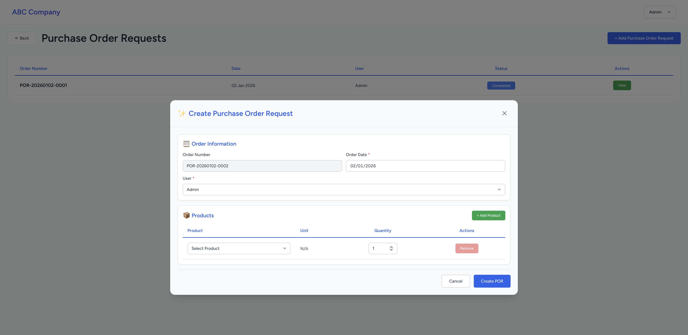

Purchase Order Requests (POR)
Purchase Order Requests allow you to create formal requests for products that need to be ordered from suppliers.
Creating a Purchase Order Request
- Navigate to Stores → Purchase Orders
- Click the "Add new Purchase Order Request" button
- Fill in the Order Information:
- Order Number: Auto-generated unique identifier (read-only)
- Order Date: Select the date for this request (required)
- User: Select the user responsible for this order (required)
- Add products to the order:
- The system pre-populates low-stock items automatically
- Click "+ Add Product" to add more items
- Select product from the dropdown
- The unit (measurement) is displayed automatically based on the product's purchase unit
- Enter the Requested Quantity for each product
- Click "Remove" to delete unwanted product rows (minimum 1 product required)
- Review all information for accuracy
- Click "Create POR" to submit the request
📸 Screenshot: por-create.png
Place your POR creation screenshot here
'">
Place your POR creation screenshot here